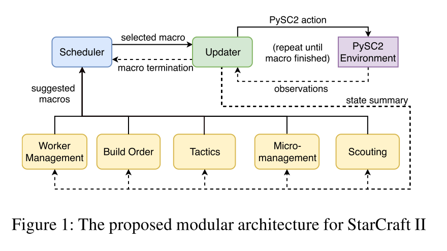

Ongoing survey on StarCraft research
Posted on Fri 06 October 2017 in research
Hi!
I have wanted to get into StarCraft research for a long time. Actually, right after I played StarCraft II for the first time. (I did not care about research when I tried the BroodWar at school =( ). Though, I have never done anything related apart from reading some papers on the topic.
Now I feel like it’s the right time to start. What is the first step? Reading up! To make it more useful for myself and for the community, I’d like to summarize all the papers on the topic I read and make a kind of overview of what have been done already. I’ve read amazing surveys [1,2] on SCI research and consider them to be one of the best resources on the topic. However it’s kinda outdated and I would like to pick up the baton.
I was thinking about writing a paper with the overview, but then decided to make it a blogpost. It’s much easier to update and make it an ongoing overview. It’s nice to have a possibility to add a new paper to the review several days after it’s published. I will start from StarCraft II, but will gradually add more work on the first version including the pioneering papers which were made by heroes who were not afraid of heavy engineering and hard hand labour (original AIIDE StarCraft competitions were run manually).
I’ll start from high-level StarCraft description and then go into research. I will also put a small glossary at the bottom since the post is going to be really looooooong, and it will be handy to have the meaning of some abbreviations at one place.
Let’s start our new journey! I plan to update the post around once a week, so, just drop by occasionally. And if you see something weird or you don’t see some paper worth mentioning, just drop me a line or find me on Twitter
What is StarCraft¶
StarCraft is an classical example of a Real-Time Strategy. The two opponents (in 1v1) are spawn on a map (the amount of spawn points is finite). They have to collect two type of resources: minerals and vespene gas, which can be spent on different units and upgrades for them. In order to build units one has to construct the production buildings and also upgrade them. The final goal of the game is to destroy all opponent's buildings.
A player can choose one of the three available races: Zergs (weak units, but numerous, Protoss (heavy tech, powerful, but slower to develop) or Terrans (somewhere in the middle). Amazingly, but in StarCraft the choose of race is important and predefines your strategy which can be also numerous for each of the races.
Built-in AI opponents are based on hand-craffed rules. In order to make them more competitive, the hardest ones have more resources or better vision.
The game is almost deterministic with some small exceptions which can be eliminated by fixing a random seed.
Why StarCraft is Hard?¶
This section is mostly taken from [3].
SC is much harder than all our previous achievements in battling humans in computer games. There are several reasons for that.
First of all, there are two levels of partial observability: the fog of war covers some map areas and we need to scout, moreover, the game screen shows only a part of the world and only some of our units can be seen on it simultaneously.
Next, the state and action spaces are tremendous, amount of units in control might be higher than a hundred.
Finally, the credit assignment problem is hard as never. You either win, lose, or there is a draw and, actions at early stages of the game have long-term consequences.
Findings¶
This is a list of things I thought about after reading all the papers mentioned below. Short summary of a survey
- The game can be divided into three levels: macro-management (constructing the buildings, keeping the track of the game in general), tactics (mid-term decisions, not sure if the second level is popular in SC literature yet) and micro-control (controlling units during combat).
- Most SC-related RL research is focusing on reactive control (at least for now)
StarCraft I research¶
The Current State of StarCraft AI Competitions and Bots [10]¶
TLDR;
The authors give a brief introduction of the three main annual SC AI tournaments, mostly describing them from the organisational point of view. They also mention briefly the most interesting and active bots taking part in one of the three competitions.
There are three major SCB AI tournaments:
- SSCAIT: Student SC AI Tournament(Has the ladder!)
- AIIDE: AI and Interactive Digital Entertainment (the bots have to be open sourced)
- CIG: Computational Intelligence in Games
One can learn more about the rules and the organisational issues of the tournaments in the paper.
The most interesting part of the paper, at least for me, is the brief description of the major bots and what they are made of.
AIlien
- Zerg
- Decisions are based on the 'scoring' systems (whatever they are).
- state machines for macro-management.
GarmBot
- Blackboard architecture
- Every unit is controlled by a single agent impelemented as a state machine
Ian Nicholas DaCosta
- Protoss
- Genetic algorithms for targeting and enemy threat level detection
- Supervised Learning for opponent strategies detection and build orders
KaonBot
- Competing priority algorithm for the resource/unit allocation
- Plans to learn the priorities from human replays in the future
Krasi0bot
- Old but active
- Genetic algorithms, neural nets and potential fields
- SSCAIT2017 winner
- MCTS for the movement of squads
- cooperative pathfinding for resource gathering
- text mining to extract build orders from Liquidpedia
MegaBot, [13]
- Three different bots in one (Skynet, Xelnaga, NUSBot)
- multi-armed bandit problem for one of the three bots selection
- -1/0/1 reward for one game
- q-learning update rule for the above problem
Monica/Maria/Brenda
- Protoss/Terrain
- Uses TorchCraft[12]
PurpleWave
- Hierarchical task networks
- Hybrid squad/multi-agent approach and nearest neighbour clustering for micromanagement
- simulation of the outcomes and min-max of the tactical approaches
- each unit behaves independently, but is advised by the decision mentioned above
- ~24 stateles behaviours
- heuristics (including potential fields) for the motion
StarcraftGP, [14]
- you write a bot
- bot writes the code for you
- the code plays for bot
- ???
- PROFIT
Steamhammer/Randomhammer
- Zerg
- alpha-beta and portfolio search for the battle outcome prediction
- hierarchical reactive control for micromanagement
- branch and bound search for Protoss and Terran production
- Rule-based for Zerg production
rscmoo
- own code for battle outcome prediction
- RNNs for high-level strategy and build order decisions
Václav Bayer
- Q-learning for the build order
Zia Bot
- heuristic and rule-based
- remembering opponent's strategy and using it in the future
Unfortunately, there is no much information about the internals of each of the bots. Though, the paper briefly introduce 14 bots and gives a good start to get acquaint yourself with what's going on in SCB AI community.
The most interesting finding for me was LetaBot and mentioning that it mines Liquidpedia for build orders. This reminded me another great paper [11], in which the authors learned to play Civilisation II using the official manual as the text guide. Looking forward for similar research in the near future!
I also find the Zia's cloning opponent strategy behaviour really cool. Self-play in RL is currently popular, but I haven't seen using the opponents strategy in the LfD setup.
Stabilising Experience Replay for Deep Multi-Agent Reinforcement Learning, 2017 [21]¶
TLDR;
A lot of real-world problems can be modelled as multi-agent RL problems. Unfortunately, multi-agent RL methods scale poorly with the problem size. How can we translate the success of single-agent deep RL to multi-agent setup? One of the issues is fighting nonstationarity hindering using experience replay in the independent Q-learning approach [16]. The current work proposes two methods which: 1) decay the importance of obsolete data using importance sampling; 2) condition each agent's value function on a fingerprint (i.e. like data timestamp); The authors use StarCraft micromanagement tasks for the evaluation.
The paper addresses independent Q-learning (IQL) [16] framework. IQL does not suffer from joint observation scalability problem which hinders the application of multi-agent RL to the real-world problems. In particular, the authors attempt to fix the nonstationarity issue which does not allow us to use the experience replay, which is a key component of stable learning for DQN [5].
The first key idea is to look at the experience replay as off-environment data [22] and do importance sampling there. The older the data is, the lower the importance weight is.
As the authors put it, IS often yields importance ratios with large and unbounded variance. Rather than correcting for it, they propose another way which is the second key idea of the paper: condition Q on the policies of the other agents as in [23]. The original idea suffers from dimensionality of the modified Q function. However, if we look at the sequence of policies which generated the data in the replay buffer as at one dimensional trajectory through high-dimensional space, we can condition the Q only on some notion of a timestamp, e.g. epoch number or the exploration ratio which is being annealed in the course of training.
The authors run the experiments with a recurrent and a feedforward architectures to show eligibility of their approach. They compare the following models:
- without experience replay (XP)
- with XP
- XP + Importance Sampling (IS)
- XP + Fingerprint (FP)
- XP + IS + FP
What happens:
- NOXP doesn't work and is even worse in the recurrent case
- XP+IS is not that different from XP, partly maybe due to IS being only approximage for partially observable problems
- There is almost no difference between XP+IS+FP and XP+FP
- Recurrent architectures can maintain their own version of a fingerprint and perform relatively good even without an explicit one. But adding it make them even better.
- Looks like using a fingerprint is enough and that's great, especially given it's super easy to implement
Counterfactual Multi-Agent Policy Gradients, 2017 [24]¶
TLDR;
A lot of real-world problems can be modelled as multi-agent RL problems. There's a need for new RL methods which can learn fully decentralised policies to solve such problems. COMA approaches the problem above using a centralised critic with decentralised policies, being able to compute all the state-action values for everybody in one sweep. The counterfactual (joint action vs joint action with marginalised agent) baseline, an integral part of the method, makes COMA perform better than the available decentralised options and on par with the centralised methods for some of the Starcraft micro-management tasks.
The paper approaches SC micromanagement as a multi-agent RL problem, where the credit assignment problem is even more challenging. The authors use centralised training of decentralised policies paradigm.
COMA:
- a centralised critic
- a counterfactual baseline (a per-agent advantage which compares the joint action estimate with the joint action when the current agent's action is marginalised)
- a specific critic representation which allows to compute all Q-values for everybody in a single forward pass
The authors make the micromanagement tasks harder by restricting the field of view range of the units. This introduces partial observability, removes access to built-in macro actions and hinders the agents from distinguishing between dead units and those who are outside of the range.
The authors perform ablation studies to find out which components of their approach make an impact on final performance: critic centralisation, Q vs V, and the counterfactual baseline. Centralisation helps dramatically, learning Q is easier to learn and more stable than learning V, and the counterfactual baseline helps.
They also compare their agents with centralised DQN and greedy MDP with episodic zero-order optimisation [25] showing that the latter outperform COMA agents (while having access to more information since they are centralised) on some tasks while being on par for some of them. The authors are planning to apply COMA for a large number of agents problems when centralised methods are much harder to train. Important to note, that the authors report the average out of 35(!) trials each with 200 episodes of evaluation.
StarCraft II research¶
StarCraft II: A New Challenge for Reinforcement Learning, 2017 [2], code¶
TLDR;
The paper introduces the StarCraft II Learning Environment, the A3C baseline which is quite good for simplified tasks and fails miserably for the full version of the game. Currently, there is no possibility to do self-play, but DeepMind is working on it. The two companies also release the dataset of human replays that is planned to be hugely enlarged. Announcement blogpost.
Right after Atari 2600 and Go success there started rumours about DeepMind working on StarCraft. The 2016 BlizzCon had unconventional for such an event guests: DeepMind. They announced the collaboration between the two companies and then calmed down for half a year. Finally, we can get our hands dirty and play with it. Everything is free, open and can be run under GNU/Linux even in headless mode! Let’s go to the release report.
Starcraft II Learning Environment (SC2LE) works as a usual RL env: an agent gets observations and the reward signal and has to take actions. One can choose to play via the raw API (BWAPI-like) or via the SCIIAPI that I will describe below.
The feature space consists of spatial $N\times M$ feature maps (e.g. fog of war of height maps) and non-spatial features such as the amount of resources or available set of actions (action set depends on the current state). Spatial features are of two types: either for minimap or for the actual screen. Currently, there is no possibility to play from RGB, but it will be added in the future. But, to be honest, in my opinion, we are still far from beating even the built-in AI agent from raw features. You can find more on features here. The whole picture looks something like this:
The two companies release a set of mini-games that were used during development as unit tests (integration tests, right? ;)). They can also be used for training some aspects of our agents: e.g. collecting resources, building the army or moving a unit to a beakon. One can build a new mini-game using the map editor.
In contrast to the full version of the game, where the reward is the result of one game (1, -1 or 0 based on the outcome), mini-games have reward functions and we can easily apply our available RL approaches to them. And the authors do that, they code an A3C agent and show its performance on a variety of tasks. The agent is tested for three different architectures: Atari-net Agent (roughly, adaptation of DQN [5] architecture for the current task), FullyConv agent (to preserve the spatial structure of the input the state representation is a set of feature maps rather than a fully connected layer), and FullyConv LSTM Agent (previous + recurrence). The agent takes an action each 8-th frame (~180 APM, with human APM 30-300).
The GrandMaster player baseline is still better, but for some of the tasks the A3C agent plays reasonably well. As the author note, even the mini-games pose interesting challenges to existing approaches.
Though, the authors want to destroy a human SCII pro in a fair game, the environment is still a simplified version of the game. The actions are not the key presses or mouse clicks, but can be a combination of several actions: e.g. action 'select_rect()' instead of manually clicking and dragging a mouse. The simulation does not also happen in real time and an agent has an infinite amount of time to take a decision. In addition to the final 1/-1/0 reward signal, one can use the running Blizzard score which evaluates the player performance as the game progesses. Even having said that, we have to admit, that the problem is still at the border of intractability. Even in such a reduced mode, the action space is large: there are ~300 actions with 13 types of arguments. The A3C agent mentioned before is unable to beat even the easiest built-in AI agent and we're only at the beginning of our journey.
Another amazing thing about this collaboration is that Blizzard is sitting on a whole shitload of human replay data which might be very very important for Learning from Demonstrations research. Currently, the dataset comprises ~65k replays, but is planned to be increased to >500k soon.
The paper mentiones using 800k for the supervised learning from replays. The authors report the results for the two experiments: value prediction (what is the outcome of the game?) and policy predictions (what is the next demonstrator's action?). Using replays for training an agent to play a game was not considered.
MSC: A Dataset for Macro-Management in StarCraft II, 2017 [6], code¶
TLDR;
Macro-management in SC is hard. Available datasets are either too small/not diverse or not standardized. The authors take the dataset from [3] (65k for now, 800k replays soon) and make a dataset for learning macro-management tasks. They hope, the dataset will be a benchmark for such kind of problems and present initial baseline results for global state evaluation and build order prediction tasks.
Playing SC end-to-end is unfeasible (at least for now), [3] shows that. The hierarchical approach looks like a promising candidate for reducing the complexity by breaking the task down into easier subproblems. This goes in line with [3] which release a set of mini-games, each of which might be a block of an SC agent.
How do we learn macro-management? Learning from human demonstrations looks like a reasonable approach [8,9]. In order to do this, we need data. There are many similar macro-management datasets for SCI , but they are mostly designed for specific tasks or really small (e.g. [7]).
[3] releases the learning environment (SC2LE) and a huge dataset (800k replays expected) of high quality where the data is standardized. The authors take all of this and transform the replays into the data for learning macro-management tasks. The dataset is easy to use (no need to replay and collect the data, the data is preprocessed already and split into train/validation/test subsets.
The authors explain in detail what they have done to build the whole data pipeline, but we will not cover them here. To get all the stats, plots and more idea, what the data is, please have a look at the paper.
All the macro actions belong to one of these four groups:
- Build a building
- Train a unit
- Research a technique
- Upgrade a building
What can we use this data for? The authors list the potential use cases of their dataset:
- mine the data to understand what do the good players do and what are the mistakes of the bad players
- apply sequence modelling for global state evaluation or even for playing
- model the uncertainty (fog of war -> uncertainty in making decisions) (didn't quite get the VAE reference idea here)
- learning from unbalanced data (lots of NOOP actions)
- imitation learning
- planning
Apart from analysing the dataset, and discussing its potential use cases, the authors also present the baselines for global state evaluation and build order prediction. The first is predicting an outcome of the game, starting at the particular state: predicting the probability of winning, given the current state. Since we don't have access to the state, but only observations, $p(win|s_t) \sim p(win|o_1,o_2, ... , o_t)$, where $s_t$ is the state at the time $t$ and $o_i$ is the observation for the time step $i$.
They use GRUs for the state evaluation and achieve $\sim60\%$ accuracy. I don't get it though, what are the reported numbers. As the authors note, the accuracy is very low at the beginning but gets better as long as the game progresses ($75\%-100\%$ at the end of the game). But what is in the tables? The authors don't say much about the Build Order Prediction task either. This looks very strange in the light of the claim, that the reported numbers are expected to be baselines for these tasks in SCII.
There are some other moments I don't like about the papers. For instance, the authors claim splitting into train/valid/test as one of the cool advantages about the data. That's useful, but it is not something extraordinary. Sometimes, from my point of view, the authors put something into the paper just to put it there (e.g. Algorithm 2). But in general, having another great dataset that is easy and ready for use is amazing. Hope to see more use cases soon.
QMIX: Monotonic Value Function Factorisation for Deep Multi-Agent Reinforcement Learning , 2018 [15]¶
TLDR;
QMIX, a novel value-based method that can train decentralised policies in a centralised end-to-end fashion. QMIX estimates joint action-values as a non-linear combination of per-agent values conditioned only on local observations. The joint-action value is monotonic in the per-agent values, which allows tractable maximisation of the joint action-value in off-policy learning, and guarantees consistency between the centralised and decentralised policies. QMIX outperforms existing value-based multi-agent RL methods on a set of SCII micromanagement tasks [3].
RL seems to be a promising approach for multi-agent cooperative problems. Sometimes (due to the partial observability of computational constraints) we want agent's policies to be conditioned only on their local observations. At the same time, we can train them in a centralised way (centralised training with decentralised execution).
How should we represent an action-value function in this case? We can make each agent learn an independent $Q_a$ function as in IQL [16] or we can train a centralised $Q_{tot}$ and use it as a critic as in [17]. The former does not allow to model interactions between agents. The latter is on-policy and maybe sample-inefficient and impractical when there are lots of agents. We can also learn a centralised factored $Q$, where each of the component conditions only on the per-agent $Q$ values as in VDN [18]. However, this limits the complexity of the $Q$ function we can use.
QMIX as VDN lies between IQL and COMA; however it can represent a much richer class of action-value functions. It turns out that it is not necessary to have a fully factorised VDN to extract a decentralised policy. All you need is monotonicity $\frac{\partial Q_{tot}}{\partial Q_a} \geq a, \forall a$. With other words, in Q-learning the only thing you care is the $\arg \max Q$. In QMIX we want \begin{align}\arg \max_{\mathbf{u}} Q_{tot} = y &= \begin{bmatrix} \arg \max_{u_1} Q_{a_1} \\ \arg \max_{u_2} Q_{a_2} \\ \vdots \\ \arg \max_{u_n} Q_{a_n} \end{bmatrix}\end{align}
Great! The only problem here might happen if we need to approximate an action-value function for which an agent’s best action depends on the actions of the other agents at the same time step.
The monotonicity constraint is imposed using the results of [19] and [20]. The whole model architecture is here:

Apart from showing that QMIX successes in all of the tasks, the authors perform ablation studies to find out that non-linear mixing or possibility for $Q_{tot}$ to access the global state is indeed something useful. It turns out that these two things benefit from each other in a combination. Also, the qualitative evaluation in section 7.3 is interesting, and the authors describe the micro-tactics the model was able to learn.
Modular Architecture for StarCraft II with Deep Reinforcement Learning, 2018 [26]¶
TLDR; A modular approach to StarCraft II which beats the harder bots in the game.
Learning everything end-to-end as a black box is very popular now. However, we can't yet use it to beat even the easiest built-in AI (or it's not published yet). It would be cool to interleave RL we've made a lot of progress recently with the domain knowledge we have about SCII (why not if we can?).
The cool thing about being modular is that the implementation is abstracted. We can script a module adding some weird heuristics. We can learn the module completely end-to-end if we wish.
The bot is a Zerg. It beats the built-in harder Zerg. It is important that the modular bot does not play with a built-in bot during training.

What's on the picture?
- Updater is the module responsible for keeping stuff in the memory, helping modules communicate via passing the messages from one to another. It is also a link layer between the bot and the PySC2 environment [3]. We need the memory to beat the partial observability. A human designer decides what to keep in memory (Table 3 in the paper).
- Macros are sub-routines which consist of micro-actions which are executed in the environment. A human designer predefines macros.
- Build order The sequence of macros a bot chooses to implement some particular strategy. Often related to the type of buildings/army one need to build to defeat the opponent.
- Tactics Policy for controlling your army on a higher level, e.g. go to this part of the map to engage in a fight.
- Scouting Scout or die. Fog-of-war is coming! The authors test the bot without fog-of-war. However, they send an overlord to the enemy location to occasionally move the camera there and keep an eye on what the opponent is doing.
Micromanagement Low-level control of your units.
Worker Management How to max your supply, basically.
Scheduler Since APM is restricted by the environment, we need to schedule and prioritise macros.
The authors train each module independent of the other, i.e. when one is being trained, all the others are static.
They use A3C for RL-driven modules applying self-learning procedure to train the models. What's the reward? The authors choose the supply difference between our bot and the opponent as a dense reward.
Evaluation¶
It is great that apart from quantitative evaluation the authors show what kind of an army composition the bot prefers.
Evaluating the bot on new maps with different size/terrain/mining locations does lead to a performance drop (7.5% on average). However, the bot is still quite competitive.
That's very surpising, that evaluating the system with fog-of-war bosts bot performance by 10% given that it was trained without (I'm not sure if fog-of-war affects the built-in bot here). I also do not quite get how the bot could learn to scout when training without fog-of-war.
My comment¶
Interesting, that the micromanagement is scripted when a lot of RL researchers has been working on micromanagement in particular. How comparable the results with the existing research are? What's the performance of the best AIDE bot when we play against the same built-in bot? What's the performance against other races, btw?
Despite the questions above, I really like the modular approach. In my optinion it is a great way of going forward in a steady manner building upon what we already have. The bot is much more interpretable in this setting too!
Notation¶
- SCI, SCB, SCII – StarCraft I, Starcraft: Broodwar, Starcraft II
- SC – StarCraft, I use this abbreviation when the distinction is not significant
- RL – Reinforcement Learning
- LfD – Learning from Demonstrations
- some italic text – my remarks, not author's opinion
References¶
[1] Ontanón, Santiago, Gabriel Synnaeve, Alberto Uriarte, Florian Richoux, David Churchill, and Mike Preuss. "A survey of real-time strategy game ai research and competition in starcraft." IEEE Transactions on Computational Intelligence and AI in games 5, no. 4 (2013): 293-311, link.
[2] Robertson, Glen, and Ian Watson. "A review of real-time strategy game AI." AI Magazine 35, no. 4 (2014): 75-104, link.
[3] Vinyals, Oriol, Timo Ewalds, Sergey Bartunov, Petko Georgiev, Alexander Sasha Vezhnevets, Michelle Yeo, Alireza Makhzani et al. "StarCraft II: A New Challenge for Reinforcement Learning." arXiv preprint arXiv:1708.04782 (2017), link.
[4] Mnih, Volodymyr, Adria Puigdomenech Badia, Mehdi Mirza, Alex Graves, Timothy Lillicrap, Tim Harley, David Silver, and Koray Kavukcuoglu. "Asynchronous methods for deep reinforcement learning." In International Conference on Machine Learning, pp. 1928-1937. 2016, link.
[5] Mnih, Volodymyr, Koray Kavukcuoglu, David Silver, Andrei A. Rusu, Joel Veness, Marc G. Bellemare, Alex Graves et al. "Human-level control through deep reinforcement learning." Nature 518, no. 7540 (2015): 529-533, link.
[6] Wu, Huikai, Zhang, Junge, Huang, Kaiqi "MSC: A Dataset for Macro-Management in StarCraft II" arXiv preprint arXiv:1710.03131 (2017), link.
[7] Cho, Ho-Chul, Kyung-Joong Kim, and Sung-Bae Cho. "Replay-based strategy prediction and build order adaptation for StarCraft AI bots." In Computational Intelligence in Games (CIG), 2013 IEEE Conference on, pp. 1-7. IEEE, 2013, link.
[8] Erickson, Graham Kurtis Stephen, and Michael Buro. "Global State Evaluation in StarCraft." In AIIDE. 2014, link.
[9] Justesen, Niels, and Sebastian Risi. "Learning macromanagement in starcraft from replays using deep learning." arXiv preprint arXiv:1707.03743 (2017), link.
[10] Čertický, Michal and Churchil, David. "The Current State of StarCraft AI Competitions and Bots, 2017",link.
[11] Branavan, S. R. K., David Silver, and Regina Barzilay. "Learning to win by reading manuals in a Monte-Carlo framework." Journal of Artificial Intelligence Research 43 (2012): 661-704, link.
[12] Synnaeve, Gabriel, Nantas Nardelli, Alex Auvolat, Soumith Chintala, Timothée Lacroix, Zeming Lin, Florian Richoux, and Nicolas Usunier. "TorchCraft: a Library for Machine Learning Research on Real-Time Strategy Games." arXiv preprint arXiv:1611.00625 (2016), link.
[13] Tavares, Anderson, Hector Azpúrua, Amanda Santos, and Luiz Chaimowicz. "Rock, Paper, StarCraft: Strategy Selection in Real-Time Strategy Games." In 12th Artificial Intelligence and Interactive Digital Entertainment Conference (AIIDE), pp. 93-99. 2016, link.
[14] Garćıa-Sánchez, Pablo, Alberto Tonda, Antonio M. Mora, Giovanni Squillero, and J. J. Merelo. "Towards automatic StarCraft strategy generation using genetic programming." In Computational Intelligence and Games (CIG), 2015 IEEE Conference on, pp. 284-291. IEEE, 2015, link.
[15] Rashid, Tabish, Mikayel Samvelyan, Christian Schroeder de Witt, Gregory Farquhar, Jakob Foerster, and Shimon Whiteson. "QMIX: Monotonic Value Function Factorisation for Deep Multi-Agent Reinforcement Learning." arXiv preprint arXiv:1803.11485 (2018), link.
[16] Tan, Ming. "Multi-agent reinforcement learning: Independent vs. cooperative agents." In Proceedings of the tenth international conference on machine learning, pp. 330-337. 1993, link.
[17] Foerster, Jakob, Gregory Farquhar, Triantafyllos Afouras, Nantas Nardelli, and Shimon Whiteson. "Counterfactual multi-agent policy gradients." arXiv preprint arXiv:1705.08926 (2017), link.
[18] Sunehag, Peter, Guy Lever, Audrunas Gruslys, Wojciech Marian Czarnecki, Vinicius Zambaldi, Max Jaderberg, Marc Lanctot et al. "Value-Decomposition Networks For Cooperative Multi-Agent Learning." arXiv preprint arXiv:1706.05296 (2017), link.
[19] Ha, David, Andrew Dai, and Quoc V. Le. "Hypernetworks." arXiv preprint arXiv:1609.09106 (2016), link.
[20] Dugas, Charles, Yoshua Bengio, François Bélisle, Claude Nadeau, and René Garcia. "Incorporating functional knowledge in neural networks." Journal of Machine Learning Research 10, no. Jun (2009): 1239-1262, link.
[21] Foerster, Jakob, Nantas Nardelli, Gregory Farquhar, Philip Torr, Pushmeet Kohli, and Shimon Whiteson. "Stabilising experience replay for deep multi-agent reinforcement learning." arXiv preprint arXiv:1702.08887 (2017), link.
[22] Ciosek, Kamil Andrzej, and Shimon Whiteson. "OFFER: Off-Environment Reinforcement Learning." In AAAI, pp. 1819-1825. 2017, link.
[23] Tesauro, Gerald. "Extending Q-learning to general adaptive multi-agent systems." In Advances in neural information processing systems, pp. 871-878. 2004, link.
[24] Foerster, Jakob, Gregory Farquhar, Triantafyllos Afouras, Nantas Nardelli, and Shimon Whiteson. "Counterfactual multi-agent policy gradients." arXiv preprint arXiv:1705.08926 (2017), link.
[25] Usunier, Nicolas, Gabriel Synnaeve, Zeming Lin, and Soumith Chintala. "Episodic exploration for deep deterministic policies: An application to starcraft micromanagement tasks." arXiv preprint arXiv:1609.02993 (2016) link.
[26] Lee, Dennis, Haoran Tang, Jeffrey O. Zhang, Huazhe Xu, Trevor Darrell, and Pieter Abbeel. "Modular Architecture for StarCraft II with Deep Reinforcement Learning." arXiv preprint arXiv:1811.03555 (2018), link.